.jpeg)
.jpeg)
Japanese Mythology |
Japanese mythology is a combination of primarily Shinto and Buddhist traditions. In addition to the most powerful gods and goddesses, there are also millions of kami, or “holy powers,” associated with forces of nature, geographical features, and the spirits of the venerated dead. |
________
| 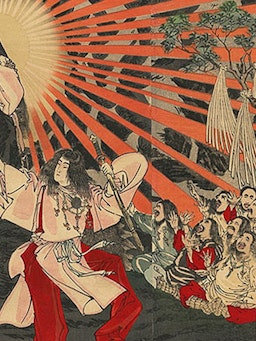 |
AmaterasuJapanese sun goddess, the queen of heaven, kami, and creation itself. |
| 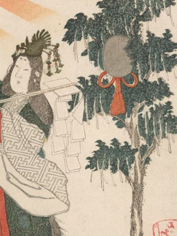 |
Ame-no-UzumeJapanese goddess of the dawn, who saved the world from eternal night. |
| 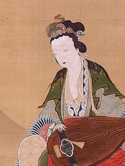 |
BenzaitenJapanese goddess of luck and wisdom, kami of all that flows, from water to time. |
| 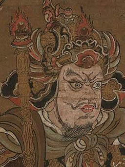 |
BishamontenJapanese god of war and fortune, protector of Buddhist temples and shrines. |
| 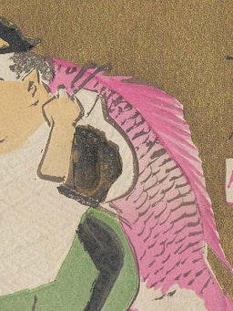 |
EbisuSmiling Japanese god of luck, wealth, and prosperity, patron of fishermen. |
| 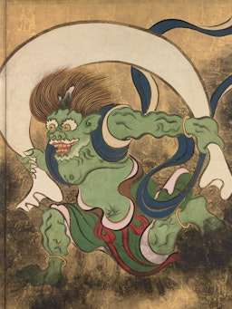 |
FujinJapanese god of the wind, frighteningly powerful and neither good nor evil. |
| 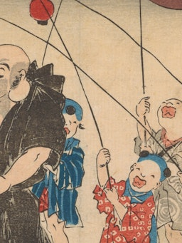 |
HoteiThe “Laughing Buddha,” a benevolent Japanese god and symbol of luck. |
| 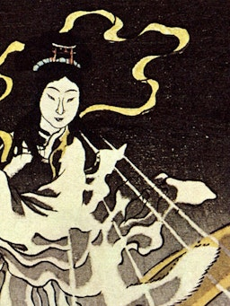 |
InariComplex Japanese deity and patron of tea, rice, prosperity, smithing, and foxes. |
| 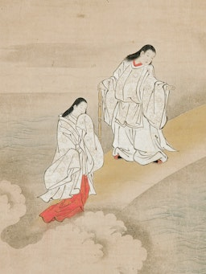 |
IzanagiOne of Japanese mythology's divine creators, father of the islands of Japan. |
JizoOne of Japan's most beloved bodhisattva, protector of children and the dead. |
|
KannonGoddess of compassion and mercy, the most popular bodhisattva in Japan. |
|
| 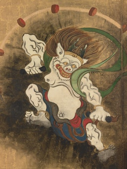 |
RaijinChaotic but popular Japanese god of thunder, lightning, and storms. |
| 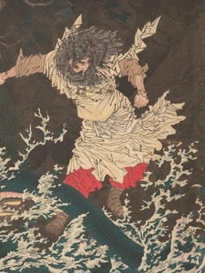 |
SusanooTempestuous Japanese god of seas and storms and slayer of dragons. |
| 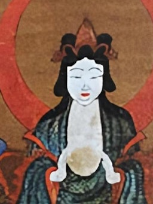 |
TsukuyomiJapanese moon god forever separated from his wife, sun goddess Amaterasu. |
________
Japanese mythology is a system of beliefs that includes Shinto and Buddhist traditions. The Shinto religion alone has many kami (Japanese for "gods" or "spirits").
Most Japanese myths, as generally known today, are based on the Kojiki, Nihonshoki and some other books. The Kojiki or "Record of Ancient Things" is the oldest known book of myths, legends, and history of Japan. The Shintoshu explains origins of Japanese gods and goddesses from a Buddhist point of view while the Hotsuma Tsutae has a very different version of mythology.
|
|
|
One notable thing of Japanese mythology is that it explains birth of Amaterasu, the origin of the Imperial family, and assigned them divinity. The Japanese word for the Emperor of Japan, tennō (天皇), means "heavenly emperor".